DRAM
Breaking Bad
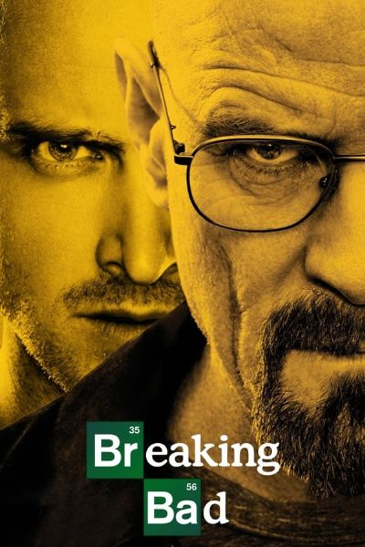50 yaşında lisede kimya öğretmenliği yapan Walter White evini geçindirebilmek için bir oto yıkamacıda ek iş yapmaktadır. Mütevazi bir yaşam süren White'ın ucuz bir evi, ucuz bir arabası sıradan bir hayatı vardır. Bir gün ileri derecede akciğer kanseri olduğunu öğrenir. Artık kalan ömrünün süresini tahmin etmektedir.
Sherlock
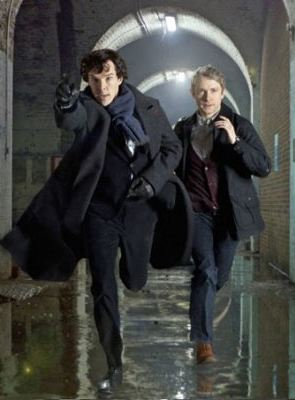Modern bir Sherlock Holmes uyarlaması.. Bu kez Sherlock günümüz Londra'sında, günümüz şartlarında çözüyor davaları. Yanında yine Doktor Watson, en büyük düşmanı yine Moriarty. Adresi yine Baker Street..
Game of Thrones
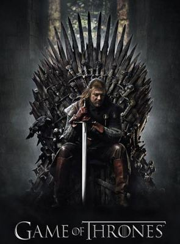Krallık dediğin savaşsız olur mu? En güçlü krallığı kurup, huzuru sağlamış olsan bile bu gücü elinde nasıl koruyacaksın? Burada yanlış yapana yer yok, affetmek yok. Kuzey Krallığının hükümdarı Lord Ned Stark, uzun ve zorlu savaşlardan sonra anayurduna dönüp krallığını bütünlük içerisinde tutmayı başarmıştır. Kral Robert Baratheon ile yıllarca omuz omuza çarpışan ve Baratheon'un kral olmasını sağlayan Ned Stark'ın tek istediği kuzey sınırlarını koruyan krallığında ailesiyle ve halkıyla yaşamaktır.
KOMEDİ
South Park
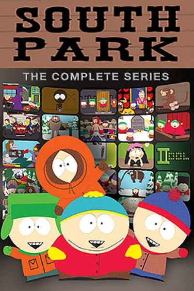Büyümekte olan dört çocuğun, Cartman, Stan, Kyle ve Kenny’nin gözünden dünyadaki politik, sosyal ve güncel olayların ironik bir biçimde ele alındığı dizi, yetişkinler için hazırlanmış içeriğinden anlatımına ‘kendine has’ benzersiz bir yapım.
After Life
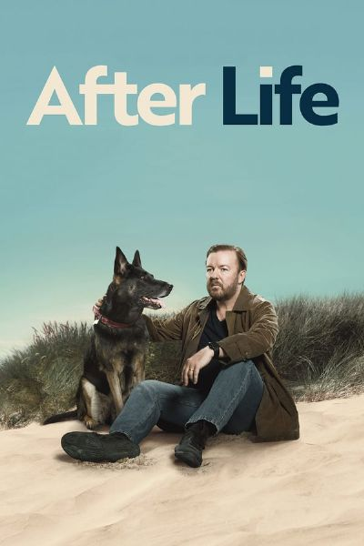Ricky Gervais’in senaryosunu yazdığı ve baş rolünde de yer aldığı After Life dizisi, eşinin ölümünü kabullenmekte zorlanan bir gazete yazarının artık hayata karşı kaybedecek bir şeyi olmadığını anlayıp istediği her şeyi yapmaya ve söylemeye başlayan Tony’nin ilginç hayatını konu alıyor.
Mr.Bean
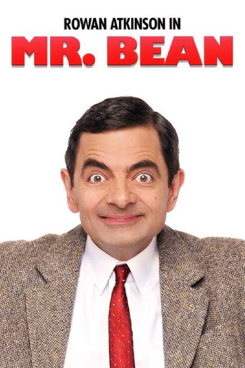Bean günlük yaşamda en basit işlerini yapmakta zorlanıyor, ancak sebat ve becerikliliği sık sık onun sorunların yollarını ustaca bulmasına izin veriyor.
AKSİYON
Vikings
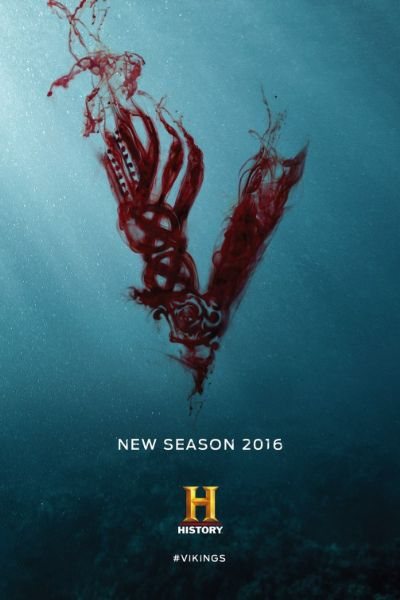Vikings dizisi; Fransa ve Britanya’ya kadar uzanan saldırılarla tarihte kendisinden epey söz ettirmiş gözü pek savaşçı Ragnar Lothbrok ve oğlu Bjørn‘un yaşadıklarını anlatırken, Vikinglerin çok az işlenmiş kültürünü de bize yansıtarak gerçeğe dayalı bir izlenim sunuyor. Ragnor’un sıradan bir çiftçiyken ne kadar ileriyi görebileceğine şahit oluyor ve onun kardeşi kadar sevdiği arkadaşı Rollo‘yla birlikte denizlerle olan imtihanını seyrediyoruz.
Prison Break
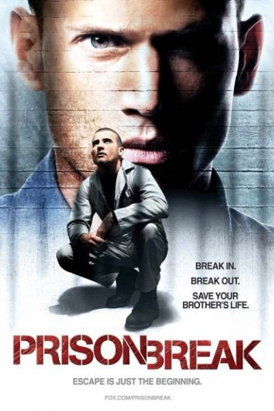Bir yapı mühendisi olan Michael Scofield (Wentworth Miller) Başkan Yardımcısı'nın kardeşini öldürmek suçuyla idam cezasına çarptırılan ağabeyi Lincoln Burrows'u (Dominic Purcell) kurtarmak için bütün hukuki yolların tükendiğini farkedince işi kendisi halletmeye karar verir ve kusursuz bir hapisten kaçış planı hazırlar. Sonrasında göstermelik bir banka soygunu düzenler ve cezaya çarptırılır. Bu planların hepsini şüphenelinmeyecek biçimde vücutuna dövemsini yaptırır. Sağlık sorunlarını bahane eden Michael, abisinin de olduğu Fox River Eyalet Hapishanesi'ne gönderilir.
The Boys
The Boys, alışık olduğumuz süper kahramanlardan farklı bir imaj çizen birbirinden ilginç karakterleri bünyesinde barındırıyor. Şöhret yüzünden yozlaşan ve dünyaya faydadan çok zararları dokunan bu süper kahramanları kontrol altında tutmak ve gerekirse ortadan kaldırmak için CIA önderliğinde The Boys isimli bir ekip kuruluyor. Dizi, düzeni sağlamakla görevli bu ekibin zorlu maceralarını konu alıyor.
SITCOM
Friends
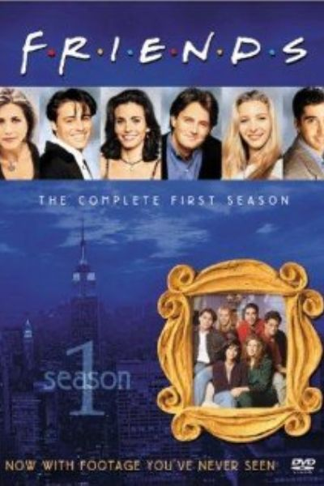Tüm zamanların en sevilen sitcom'larından birisi Seinfeld ise öteki hiç kuşkusuz Friends olmuştur. Çocukluk arkadaşı olan Monica ve Rachel, Monica'nın ağabeyi Ross, Ross'un üniversiteden oda arkadaşı Chandler... Chandler'ın ev arkadaşı Joey ve Monica'nın eski arkadaşı Phoebe. Geçmişleri bir şekilde bir yerde kesişen bu altı arkadaşın yedikleri içtikleri ayrı gitmiyor. İnanılmaz bir mizah ile dostluk bağlarının içiçe geçtiği dizideki karakterler, 10 sezona yayılan hikaye boyunca izleyiciyle beraber büyüyüp olgunlaşıyor. Jennifer Aniston gibi sonradan yıldızlaşacak isimleri kazandıran bir dizi olarak da unutulmazlar arasına girmeyi başarıyor.
The Big Bang Theory
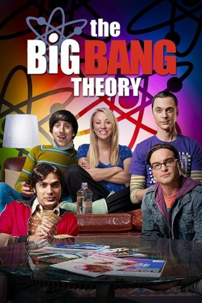
En büyük zevkleri kuantum fiziğine kafa yormak olan üstün zekalı iki dost, güzel bir kızla karşılaşınca ne yaparlar? The Big Bang Theory, işte o karşılaşma anında gerçekleşen büyük patlama ve sonrasını anlatan bir komedi dizisi...
Brooklyn Nine-Nine
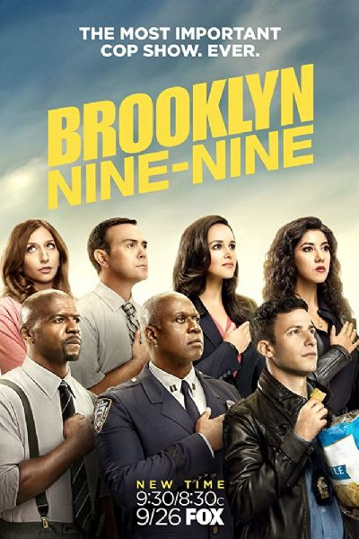Jake, işinde iyi, yetenekli ve ekibi içinde yakalama oranı en iyi polistir. Fakat diğer yandan ciddiyetten yoksun ve sıkı çalışması gerekmemiş birisi olarak oldukça rahat birisidir. Ekibe yeni gelen patron, emrindekilerin “rozetin hakkını vermesi” gerektiğini düşünen biri olarak işe koyulur ve Jake'ten başlar. Bu da komik pek çok olayın yaşanmasına sebebiyet verir.